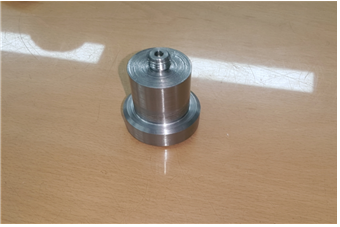
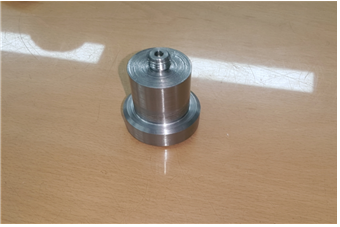
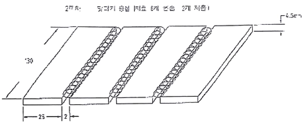
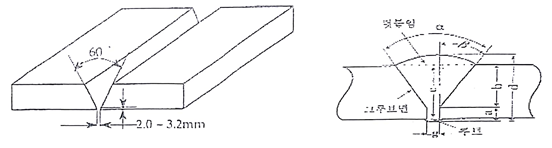
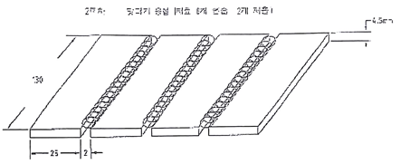
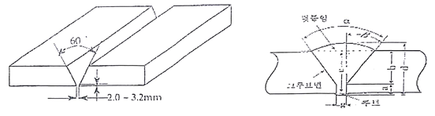

기계공작 실습
개요
주어진 도면에 따라 각기 다른 도구들을 통해 과제를 수행한다.
선반
회전하는 원통형 재료를 깎는다. 재료가 회전하고, 드릴은 고정된 채 축이 이동하는 방식이다.
도면


결과
 

결합

밀링
고정된 평평한 재료를 깎는다. 재료는 고정되어 있고, 드릴이 회전하며 축이 이동한다.
도면


결과

용접
여러 용접 방식중 아크 용접을 실습한다. 감전되지 않게 조심하며 순서를 잘 지켜야 한다. 수평각도와 수직각도를 잘 지키며 실습한다.
방법
 



결과
컴퓨터 응용 제도
Parametic CREO
Hand blender
Parametic CREO를 이용 해 실측한 [핸드 블렌더]를 모델링 했다. 볼트, 너트 등 체결 부품들을 실제 사이즈에 맞게 모델링하고, 외형과 내형도 곡선 부분을 매끄럽게 모델링한다. 어셈블을 통해 모델링된 각 부품들이 서로 맞는지 확인하고, 맞닿는 면이나 축을 통해 부품을 고정한다. 완벽히 고정된 부품들을 메카니즘을 통해 구동을 확인하고, 애니메이션을 제작한다. 프로젝트 기준이 부품이 40개 이상이었고, 메카니즘이 확실히 보여야 했기 때문에 적절하게 핸드 블렌더를 선택했다.
메카니즘 구동 영상 및 애니메이션 영상
모터와 체결부품들의 메카니즘 영상과 3D 조립 모습을 보여주는 애니메이션 영상이다.